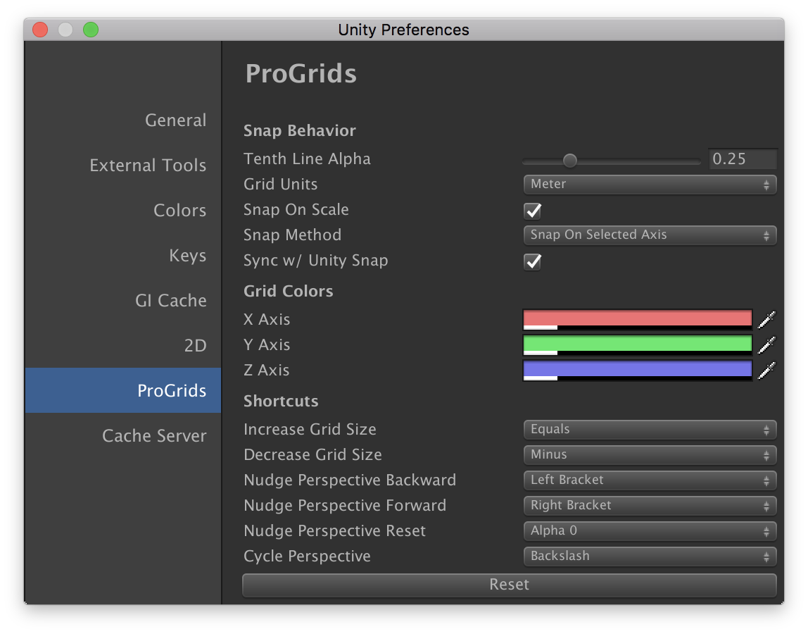

Customizing ProGrids
With ProGrids you can set custom grid planes, colors, snap increments, and more.
ProGrids has many options that you can customize, to better suit your needs/uses/habits:

Snap Behavior
| Setting | Description |
|---|---|
| Tenth Line Alpha | Every 10th grid line will have an increased opacity. This value sets what opacity is. |
| Grid Units | The unit of measurement that the snap value is represented in. |
| Snap on Scale | When enabled the scale of objects is snapped. |
| Snap Method | When translating objects ProGrids can snap per-axis (Snap on Selected Axis) or on all axes. |
| Sync w/ Unity Snap | When enabled, setting the snap value also sets the Unity move snap value. |
Grid Colors
Set the colors used for each grid axis. Applies to both plane and perspective grid rendering.
Shortcuts
The following shortcuts are available only when the Scene view is currently focused.
| Shortcut | Description |
|---|---|
| Increase Grid Size | Doubles the snap value. |
| Decrease Grid Size | Halves the snap value. |
| Nudge Perspective Backward | When the grid is locked, this moves it backwards along it's axis. |
| Nudge Perspective Forward | When the grid is locked, this moves it forward along it's axis. |
| Cycle Perspective | Change the scene camera orientation from orthographic X, to Y, to Z, to perspective. |